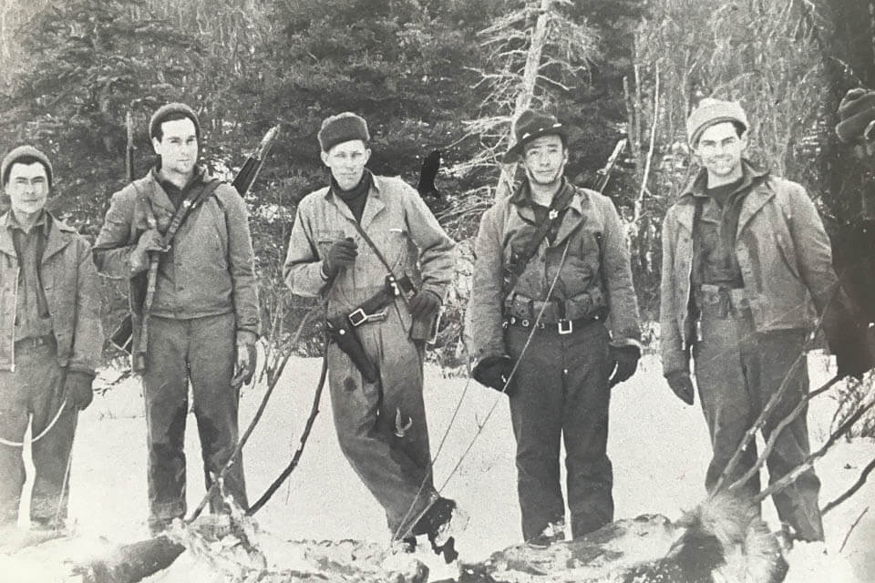

National historical sites are designations for protected areas of national historical interest. Generally, these areas are selected by a governing body and are deemed to contain important sites or resources of national historical interest.
The Aleutian World War II site houses the military ruins of Fort Schwatka, the highest coastal battery ever constructed in the U.S. The site is a 134-acre tract of land located in Unalaska, Alaska on Amaknak Island. On June 3, 1942, the day after the Battle of Midway, the Japanese attacked the Aleutian Islands. For fifteen months, the Japanese occupied two of the islands.
The Klondike Gold Rush National Historical Park is located in Skagway, Alaska. In July, 1887, news reached the United States that gold had been discovered. At this time, the U.S. was in a financial recession, which encouraged men from all walks of life to head for the Yukon. About 12.5 million ounces of gold have been taken from the Klondike area since its discovery.
The Sitka National Historical Park is Alaska's oldest federally designated park and was established as a federal park in 1890 to commemorate the 1804 Battle of Sitka between the Tlingit Indians and the Russians. Located within this 113-acre scenic park is the site of the Tlingit Fort and battlefield. The Tlingit Indians developed practical ways of surviving on these islands centuries before the Russians appeared. They relied on the ocean and a variety of berries and game animals for their food.
